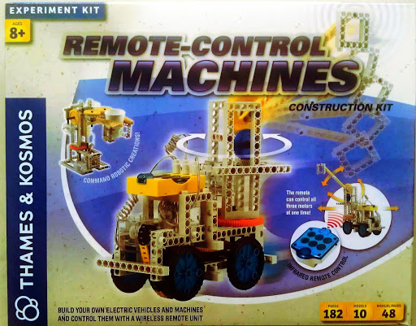

Ivanix Mobile LLC
Ivanix Mobile LLC
A few summers ago, I found myself hosting a robotics class for kids. We used a construction set sold under the name "Remote Control Machines" by Thames & Kosmos and also as "Robot Power" by Gigo.

The set is unique in that up to three dc motors can be remote controlled simultaneously, each in either direction. The motors connect to a yellow plastic module that house the batteries along with the infra-red receiver and motor controllers. The IR remote control has six separate buttons, two for each motor.
For a child's introduction in the world of robot building, this set has the basic mechanics covered, beams, wheels, motors, gears and more. For our purposes however, it had two major deficiencies. First, core part of robotics involves programing some time of computer which will control the mechanics and this set had none. Second, in a classroom setting where several sets are situated in near proximity to each other, the IR signals interfered with each other as all use the same frequency and transmission codes.
The solution to both issues came by way of an Arduino board wired with an IR LED. After a scanning and analyzing the codes sent by the remote control, I was able to program the Arduino to mimic its IR transmissions. Basic Arduinos models cost around $20 USD, give or take, but the microcontroller chip they are based on, ATmega328P run about $4 USD or less. So a cost down and custom board was in order, resulting in K-9.

The custom board contains a socket for the IR Led, a mounted piezo speaker, another socket for attaching a numeric keypad, another connector for programming and for optional bluetooth module and another set of connectors for input sensing.
When fully assembled the custom board sits on top of IR receiver module followed by the keypad which is used to program the robot.


And finally we have a basic two wheel K9 robot waiting for instructions.
![